Ⅱ、Win系统安装
三千预算进卡吧，加钱加到九万八。十核E7装上去，四路泰坦抱回家。
4K屏幕组三屏，万元水冷温度压。固态硬盘装三块，硬盘内存使劲加。
键鼠必花几千块，耳机手柄八千八。还有机箱一万一，红星炸弹啪啪啪。
最后发现没啥用，抱着神机刷贴吧。
三千预算进图吧，学校对面开网吧。AN矿卡是标配，垃圾靠岸笑哈哈。
坏道迈拓装系统，并口硬盘论车拉。老式志强超频爽，奔腾菜羊够用啦。
十手矿卡装上去，鱼竿内存满箱插。机箱路边随便捡，安踏鞋盒擦一擦。
机械键盘自己搞，鼠标一斤一块八。人人手拿七七五，家家双路叉五八。
萝卜散热效果好，牙膏硅脂温度压。二手便宜质量好，一切信仰就是渣。
——大人，时代变了，好好装机！本教程面向Windows平台。
1、准备工作
（A）一个U盘（≥8GB），存放安装镜像
（B）一个联网、可以读写USB的电脑或手机
（C）一个准备安装系统的PC
2、 创建引导U盘
方法一、官方工具全自动创建
1、下载镜像生成工具：
Windows 10：https://www.microsoft.com/zh-cn/software-download/windows10
Windows 11：https://www.microsoft.com/zh-cn/software-download/windows11
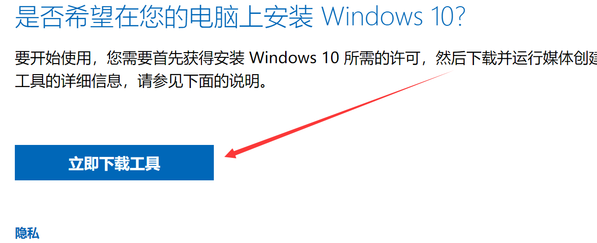
2、插入U盘，打开MediaCreationToolxxxx.exe。选择创建安装介质。
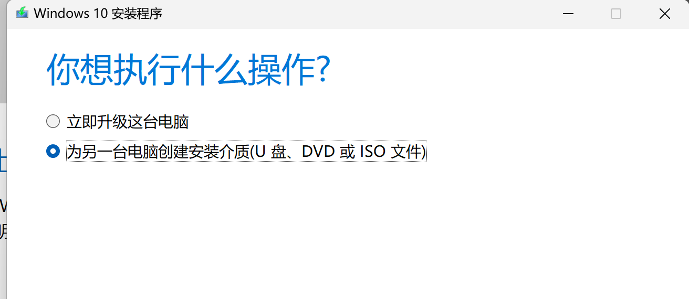
3、版本选择Windows 10 / Windows 11，默认包含全版本安装文件。体系一般为x64。
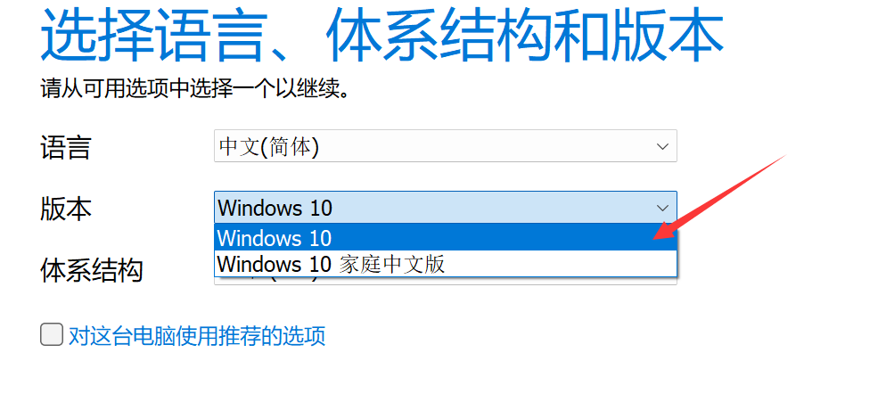
4、选择创建方式。推荐选择U盘，一步到位。若需单独使用iso镜像，则选择ISO文件。
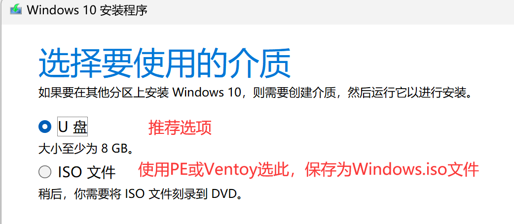
5、点击下一步（ISO方式记住保存路径，按方法二/三/四继续操作），等待创建完成。
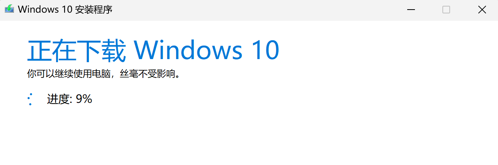
方法二、手动下载镜像解压
1、准备ISO镜像，使用上方工具创建ISO文件，或从Next,ITellYou网站下载，点击NEXT, ITELLYOU。
2、下载选择商业版/business版，后续适用各种激活方式。复制ED2K或BT自行下载。
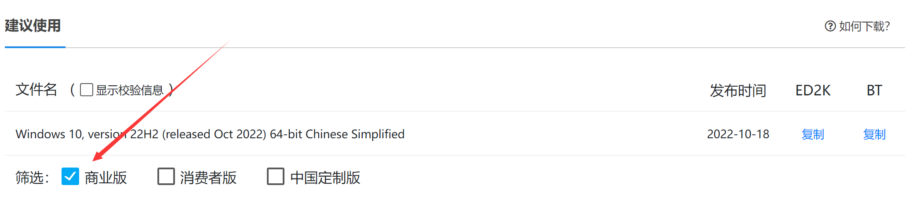
3、下载镜像后解压镜像内文件至U盘根目录。U盘格式推荐为FAT32，兼容性最佳。解压完成即可引导安装。
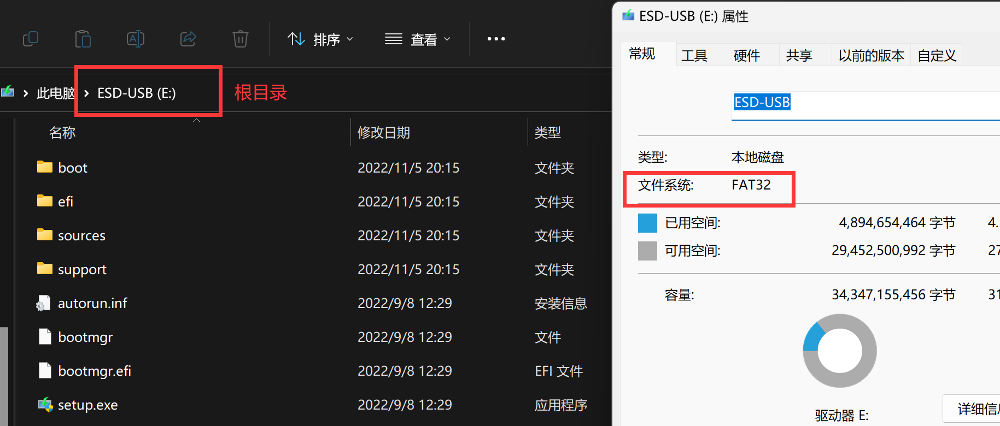
方法三、Rufus写入U盘
1、准备ISO镜像，方法如上。
2、下载Rufus（图吧工具箱内置，其他工具-Rufus），点此手动下载3.20版本。
3、插入U盘，打开Rufus，选择镜像。
不支持EFI引导的平台分区类型选择MBR，否则保持默认。
固态U盘、移动硬盘需启用显示USB外置硬盘选项。
* 文件系统选择FAT32以保持最大兼容。
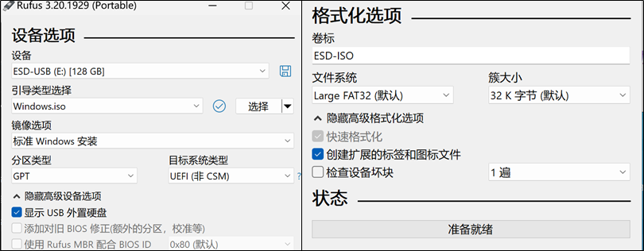
4、点击开始按钮，安装弹窗按需选择。等待镜像写入完成。
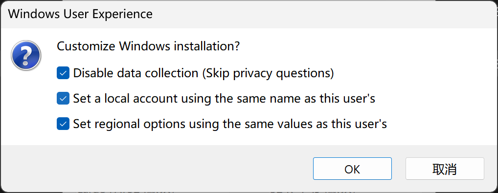
方法四、PE类工具安装
1、下载PE，推荐WePE，插入U盘创建启动盘。
2、准备ISO镜像，无需解压直接拷入微PE工具箱分区。
3、引导启动安装镜像
一、可选：主板BIOS启动类型设置
新平台默认UEFI引导，CSM兼容关闭，无特殊需求保持默认即可。 Legacy——Win10 MBR磁盘分区格式、不兼容EFI启动的老显卡需要该功能，在CSM Support中开启。 UEFI——11年后主板普遍支持UEFI启动，若无Legacy设备，直接选择UEFI Only即可。
1、开机狂按DEL进入BIOS，特殊主板详见启动LOGO下方标注、主板说明书或自行百度
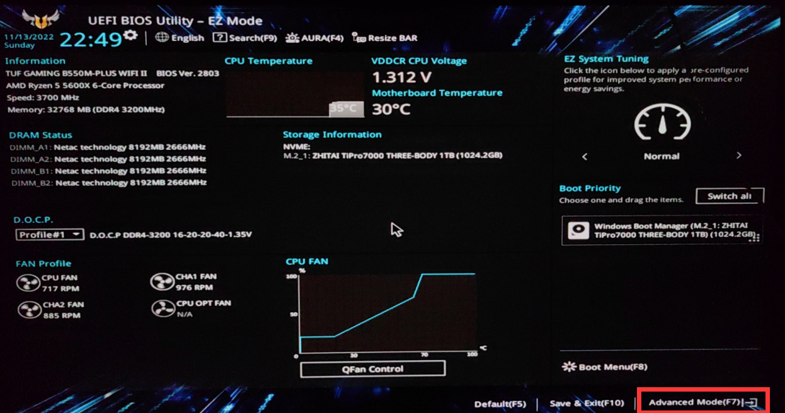
2、BIOS中选择Boot菜单（部分主板需先进入高级模式，见上图红框），选择CSM
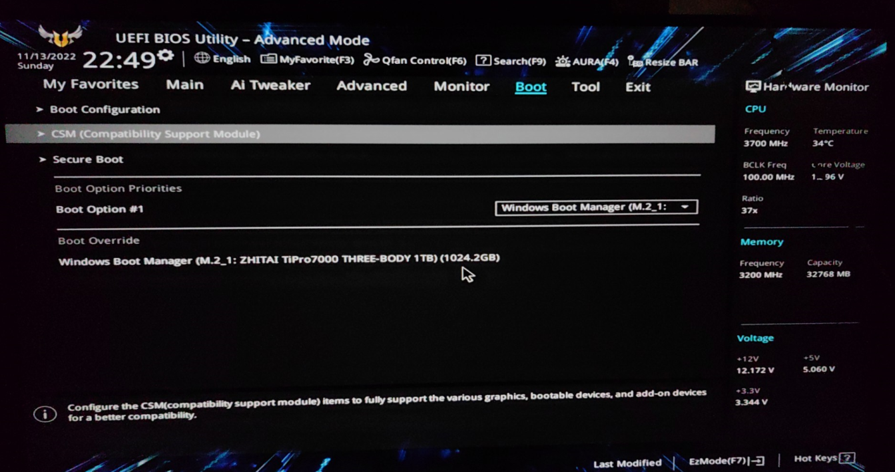
3、CSM选项中选择开启或关闭，部分主板为CSM supported / legacy only / uefi only，混合模式兼容性最佳。
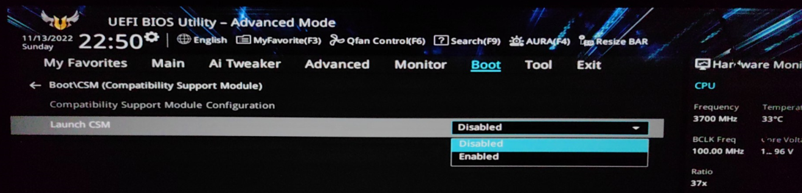
4、保存设置并重启，默认快捷键为F10。
二、选择U盘启动
按下开机键后狂按快捷键进入Boot菜单，华硕F8，微星F11，技嘉F12，其他主板详见启动LOGO下方标注、主板说明书或自行百度。根据需要选择U盘引导选项，默认选择UEFI：XXXX项，有特殊需求或老平台选择U盘名称项。回车后从U盘启动。PE引导需手动打开Windows安装镜像。
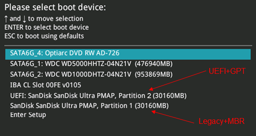
三、选择目标硬盘并安装
1、进入安装程序，操作系统推荐专业版，安装类型除升级外均选择第二项：仅安装Windows。
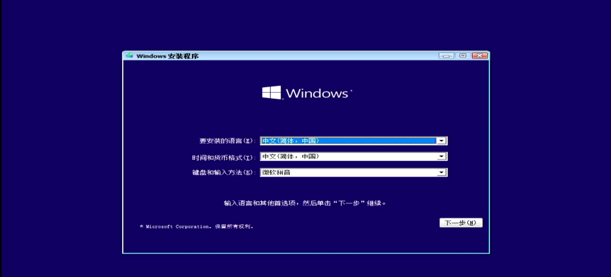
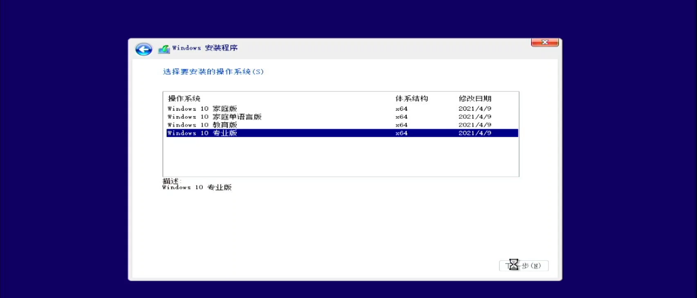
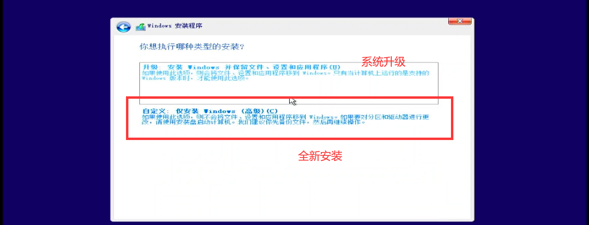
2、选择目标硬盘，点击下一步开始安装。完成后拔出U盘重启。 11/12代酷睿不显示硬盘问题的详见下文注入驱动部分。
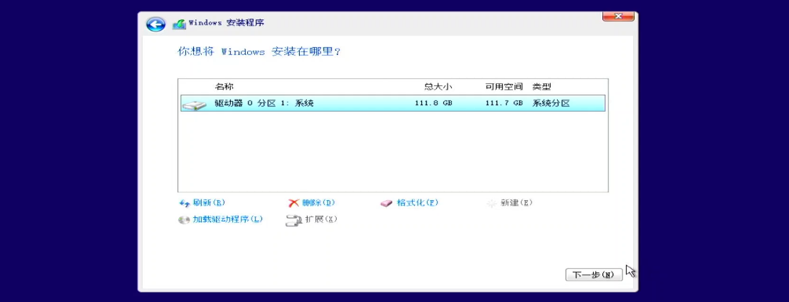
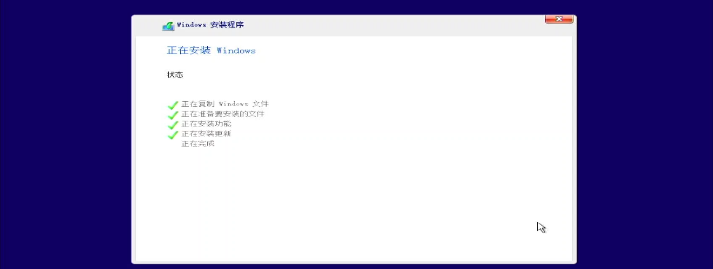
3、系统初始化，按需选择，完成安装。 MT7921等无线网卡不显示Wifi连接问题的详见下文注入驱动部分。
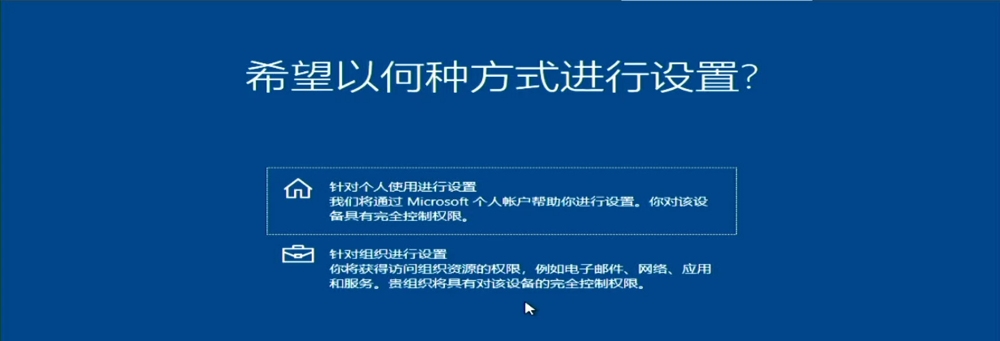
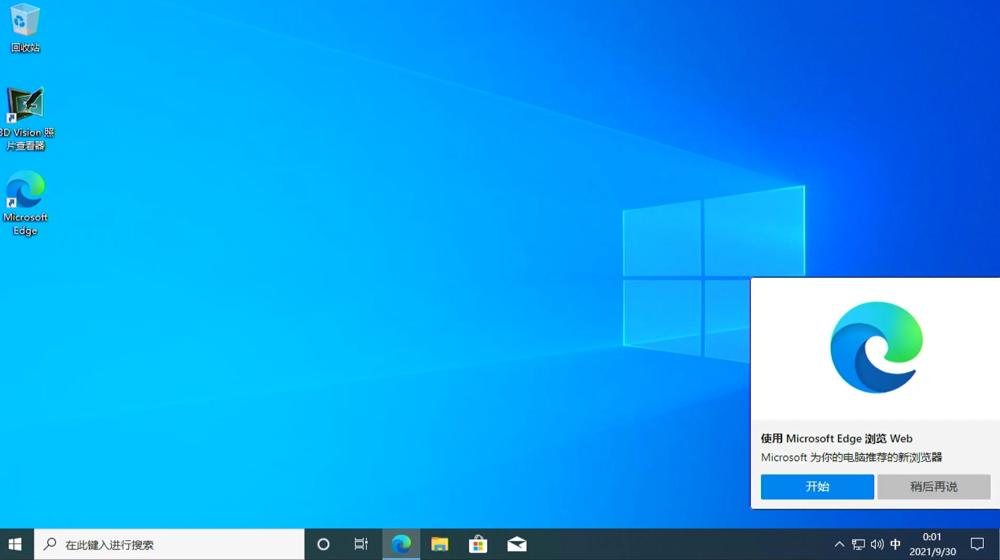
4、可选：注入驱动
-
由于11/12代酷睿使用了新的VMD磁盘管理驱动，Windows 10 22H1之前的版本安装无法显示硬盘。
-
由于MT7921网卡未提供兼容驱动，官网Windows镜像无法连接WIFI。
-
特殊硬件无兼容驱动，官网Windows无法正确识别。
上述问题可以在BIOS中进行设置规避，也可在Windows安装过程中手动注入驱动。 下方以VMD问题为例进行操作，其他问题类似。
1、Intel官网或主板官网下载IRST_VMD驱动，官网链接，注意下载zip压缩包版本。
2、解压，在安装程序中加载驱动程序，即可识别硬盘
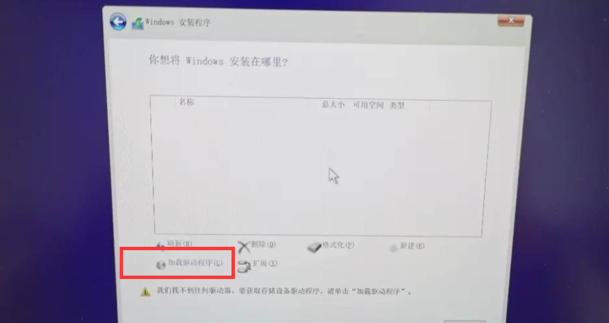